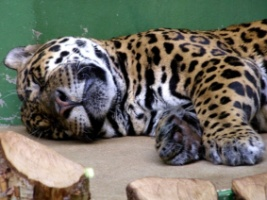

Levhart kapský(Panthera pardus melanotica Günther, 1885)
Fyzický popis
Levhart je druhá nejsilnější kočkovitá šelma Afriky. Mají vyvinutý pohlavní dimorfismus (dvojtvárnost) a samci jsou výrazně větší než samice. Srst je krátká a základní barva je od různých odstínů žluté až po žlutohnědou. Břicho a vnitřní strany nohou jsou světlejší až bílé. Celé tělo je poseto černými skvrnami, které tvoří rozety a jsou uvnitř jakoby prázdné. Na hlavě, krku, nohách a ocasu jsou skvrny plné. Levhartí tělo je silné a svalnaté. Jsou mrštní a obratní. Nohy jsou silné a mají zatažitelné drápy. Špička ocasu je většinou černá. U levhartů se vyskytuje také melanismus - černá varianta. Toto zbarvení se objevuje převážně u levhartů žijících v lesích a pralesích. Způsobuje ho přebytek černého pigmentu melaninu.
Potrava a lov
Levhart loví ptáky, plazy, malé obratlovce, ryby, opice i lidoopy. Jeho nejběžnější kořistí jsou ovšem antilopy a gazely. Občas uloví i psa hyenového, šakala i medojeda. Jejich souboj s medojedem je překvapivě dlouhý, protože medojed má mimořádnou sílu, výdrž i dostatek volné kůže. která levhartovi brání v pevném uchopení. Stejně tak je levhart někdy zabíjen lvy, psy hyenovými a krokodýly. Levhart je specialista na lov přepadením. Leží v úkrytu a při přiblížení kořisti prudce vyrazí. Kořist pronásleduje několik desítek metrů a když ji nedostihne, lov vzdává. Někdy útočí i skokem ze stromu. Po dopadení oběti se zakusuje do hrdla a oběť většinou udusí, což trvá několik minut. Pouze pokud když se mu podaří prokousnout míchu nebo zlomit vaz, je smrt rychlá. Před jinými predátory si úlovek vynáší na stromy a skrývá ho ve větvích. Dokáže tak vynést i zvíře, které váží 2x tolik, co on sám. Občas se stane, když mrtvé zvíře není dostatečně vysoko, že se k němu dostanou lvi nebo i hyeny, které vyskakují na visící části mrtvého těla. Levhart žere i mršiny a když uloví větší kořist, požírá jí i několik dní. Udává se, že má až 70% úspěšnost při lovu.
Způsoby komunikace
- hlasová
- čichová
- tělesná